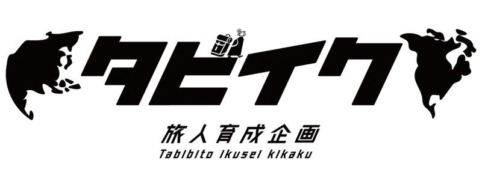
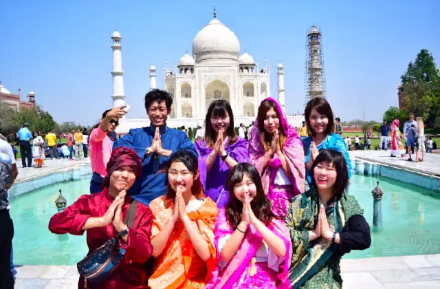

タビイク開催歴 8年

旅人輩出 3,182人以上

タビイク開催数 445回
タビイク開催歴 8年
旅人輩出 3,182人以上
タビイク開催数 445回
さあ、ワクワクを言い訳に旅に出よう

大人数だからこそ楽しい旅を集めた、お祭りや海外シェアハウスをメインとした旅企画。
皆で楽しい旅プランを見る全国47都道府県で旅しよう！参加費無料！季節に合わせたイベントなどたくさん開催中！
国内企画サイトへ初めての”海外１人旅”に不安を抱える人々が全国各地から集い、引率スタッフの現地サポートの元、実践しながら旅と現地に慣れていきます。
解散後の行き先・帰国日完全自由！胸を張ってそれぞれの１人旅へ飛び立ちましょう。
タビイク

少数民族バジャウ族の村にホームステイ！格安リゾートも満喫！
タビイク

旅人の醍醐味・鉄道旅満喫！世界遺産の街・ホイアンでフォトジェニック…
タビイク
短期3泊4日プラン！休みがない人も、長期は不安な人にもオススメ！
タビイク

[キャンセル待ち]ヨーロッパ最後の秘境で大自然に触れる旅へ
タビイク
時間が止まった国の、知られざる秘境を探して。今しかこの景色は…
タビイク

魅惑のアフリカ大陸へ。旅人はモロッコに恋をする
タビイク
開催数圧倒的No.1!タビイクの実績があるタイから始めよう！
タビイク

台湾縦横旅！格安・グルメ、気軽に行ける国No.1!
タビイク
ラクダに乗って砂漠泊、インドでクレイジーな旅を。
タビイク
ナスカの地上絵にマチュピチュ！神秘の国、ペルーを旅する。
タビイク

タイの陸路で国境超え！世界遺産のアンコールワットをこの目で！
タビイク

憧れを現実に。世界一の絶景ウユニ塩湖を見に行こう。
タビイク
憧れを現実に。世界一の絶景ウユニ塩湖を見に行こう。
タビイク
ラクダに乗って砂漠泊、インドでクレイジーな旅を。
タビイク
開催数圧倒的No.1!タビイクの実績があるタイから始めよう！

せっかく旅するからには、もっと成長したいと思う欲張りなあなたへ。資格取得や自己成長に特化した、ただ旅するだけじゃない目的を持った旅企画。
楽しいで終わらせない、次に繋がる旅をしよう。
タビイクNEXT
旅×タイ古式マッサージ！資格取得プランで手に職をつけよう！
タビイクNEXT

趣味が増える！旅の仲間と海外で一緒にライセンス取得!地球の７割へ行けずに、なにが旅人だ。
タビイクNEXT
短期3泊4日プラン！休みがない人も、長期は不安な人にもオススメ！
タビイクNEXT
旅をしながら撮って撮られて！実践しながらカメラマンの引率に技術を学…
タビイクNEXT

徹底的に自分と向き合う"旅"。ワークショッ…
タビイクNEXT
徹底的に自分と向き合う"旅"。ワークショッ…

旅するように、海外へ住んでみよう。 ただ旅するだけでは気付けない、その国の魅力に気付くはず。 海外のとあるシェアハウスに集ったメンバーと「はじめまして」から始まる生活。 一緒に買い物するもよし、料理したり乾杯したり、語り合って旅をして、筋書きのない日々を体験しよう。
1人旅もワクワクするけれど、大人数でいくからこそ楽しめる旅もある。
タビイクwith
世界一過激でカラフルなインドのクレイジなーお祭りに参戦！
全てのプランを見る
旅の準備に関するアドバイスや現地情報の提供、参加者の質問にも丁寧に対応！不安を解消して旅に出発できる！もちろん現地では引率スタッフがバッチリサポート！
現地の空港で「はじめまして」。くじで決めたグループで日中に自由行動し、まずは現地の環境と旅に慣れてもらう。夜は全員集合し、旅のシェア。日毎に人数を減らし、徐々にひとり旅の環境に近づけていく。

全国各地から集った仲間とメンバー全員で行く2泊3日の島旅も経験できる！不安とドキドキを共に乗り越えた仲間と語りあう。
期間・帰国日完全自由！それぞれのひとり旅へ。自由気ままに、自分だけの旅のストーリーを作り上げよう。帰国後も新たな出会いが生まれ続けるイベントがたくさんあるのもタビイクの醍醐味の１つ。
Q. 海外や旅が初めてで不安です。
当企画は、そんなあなたの為の企画です。出発前サポート・現地サポートを担当スタッフが行います。自分のペースで不安を解消しながら、旅と海外に慣れていきましょう。
タビイクwith企画は現地にスタッフは同行しません。
Q. １人でも参加できますか？
お一人様での参加が９５％以上です。お友達と参加される方は５％程度です。
Q. 年齢制限はありますか？
どなたでも参加できます。ただし、未成年の方は親権者の同意が必要となります。 最小参加者年齢は中学1年生(12歳)、最高参加者年齢は54歳です。
Q. どのような人が参加していますか？
これまでの参加者の性別,年齢,職業,海外経験,海外１人旅経験,言語レベルは以下の通りです。
男性：３３％
女性：６７％
最小参加者年齢は中学1年生(12歳)、最高参加者年齢は54歳です。 比較的大学生の参加が多い企画ですが、社会人・フリーターの方も多く参加しております。
（修学旅行,家族旅行,留学,ワーホリ,海外ボランティア,友人との旅など） 初海外でタビイクに参加している方が多いです。
ほぼ全参加者が初海外一人旅です。
簡単な日常会話程度を話せる方はいますが、英語・現地語を話せる方はほとんどいません。 みなさん英語ができなくても楽しんで旅をされていますよ！
Q. 英語が話せなくても大丈夫ですか？
大丈夫です。旅をする上で言語はそれほど重要ではありません。重要なのは、ジェスチャー等で伝えようとする姿勢や笑顔等の表情などのコミュニケーション力です。ただし、言語はコミュニケーションを円滑にするための１つのツールですので、英語や現地語が話せると旅の可能性が広がります。
タビイク参加者の言語レベルは、英語・現地語を話せる方はほとんどいません。 みなさん英語ができなくても楽しんで旅をされていますよ！